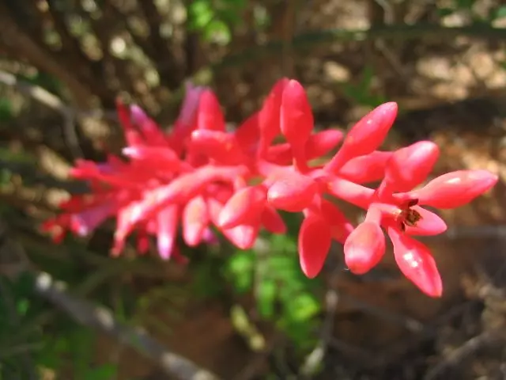

O caroá (nome cientifico: Neoglasiovia variegata), também conhecido como gravatá, gravá, caruá, croatá, caraguatá e coroatá, é um tipo de bromélia de poucas folhas, com flores vermelhas ou rosadas.
Seu nome vem da palavra em tupi kara wã, que significa talo com espinho.
É uma planta resistente e típica das áreas de Caatinga.
As folhas do caroá fornecem fibra para a confecção de barbantes, linhas de pesca, tecidos, cestos, esteiras e chapéus, além de outras peças artesanais e decorativas.
Assim, a planta é responsável pela geração de renda em várias comunidades que têm se organizado em cooperativas para comercialização do artesanato de fibra natural de base extrativista. O seu manejo segue princípios tradicionais e caseiros.
- Recentemente, estudos da Universidade Federal do Vale do São Francisco (Univasf) têm apontado que o caroá também tem propriedades medicinais, ainda que não sejam tradicionalmente reconhecidas nos seus territórios de origem. Os testes revelaram a presença de substâncias conhecidas como flavonoides, que atuam contra inflamações, dores e úlceras gástricas.